All Process Menu Options
The process menu provides options for calculating networks and altering image contents. The first submenu, Calculate Network, contains functions for calculating networks and their properties. The second, Image, contains functions that transform images.
Process → Calculate Network → Calculate Connectivity Network
Connects objects in the nodes channel via objects in the edges channel. See Quickstart — Segmenting Data and Generating Connectivity Networks for a detailed walkthrough. The vast majority of the parameters are optional, though a few warrant consideration on each execution.

Parameter explanations
xy_scale — a float setting the X/Y 2D plane pixel scaling to a real-world value, such as 5 microns per pixel. Presumed to be 1 by default.
z_scale — a float setting the Z 3D voxel depth to a real-world value, such as 5 microns per voxel. Presumed to be 1 by default.
Node Search (float) — the distance nodes search the corresponding edge image for connections to other nodes. This value is scaled by the
xy_scaleandz_scaleparameters, so where those are set correctly it can be treated as a real value such as microns. It is 0 by default, which connects only nodes that edges literally pass through.Edge Reconnection Distance (float) — the distance edges dilate, likewise scaled by
xy_scaleandz_scale.This parameter exists for segmented edges that are not continuous structures because of holes from imaging or segmentation artifacts. Edges that are wholly discrete in 3D space will not join nodes through that pathway, and inflating them fills those holes. Note that all edges are inflated, so two edges ten microns apart will merge if a value of 5 microns is entered. This method only dilates and never erodes, which also enables edges to search slightly further than the node search parameter suggests, since they can then enter a node’s search space.
There is an inherent trade-off in using dilation to fill hole artifacts, as it risks merging nearby edges that should not be merged. A small value is reasonable where holes exist, but running the filament tracer is a more elegant solution, as it fills gaps in filaments without excessive merging. The value is 0 by default and should remain so where edges have no hole artifacts or those have already been corrected.
Re-Label Nodes… — labels objects in the nodes channel with a simple adjacency-labeling scheme, so that every discrete object in space acquires a unique number. Disable this if your nodes were already labeled elsewhere.
Parameters 6–9 represent different ways of handling trunks. Trunks are edges connecting an excessive number of nodes, common in anatomical structures where nerves and vessels increasingly merge toward an originating central location. Having every node connect through the trunk into a single giant glob may be neither desirable nor statistically valid.
Times to remove Edge Trunks (int) — removes the edge trunk prior to network calculation, as many times as the integer entered: a value of 1 removes the fattest trunk, 2 also removes the second fattest, and so on.
This occurs after NetTracer3D has discretized the edges, and functions similarly to — but not identically with — removing the trunk from the network afterwards. This option removes the highest-volume edge, whereas post-hoc removal takes out the most interconnected edge. The result is often the same, but not always, so make sure you are using the version you intend.
Auto-Simplify Trunk Elements — removing the trunk entirely is one way to ignore it and evaluate more legitimate local connections, but local connectivity through the trunk may still be of interest, provided it does not connect everything from one end of the image to the other. This option forces the trunk to prefer local connections over longer ones, while still permitting distant connections where no closer nodes are available along the path.
It works by recomputing the entire connectivity network with the node search regions maxed out, causing all nodes to systematically partition the trunk by proximity. Connections made in this enlarged search that do not exist at your original search distance are then dropped, returning a result valid for your desired search regions but with a simplified trunk.
Because of the recomputation, this at minimum doubles processing time. Furthermore, fast search is not used for the maxed-out computation, since the parallel distance transform into flood labeling is both less accurate and slow at massive dilations; the single-core
scipy.ndimage.distance_transform_edtis used instead to obtain a perfect voronoi diagram and bypass flood labeling.Use pre-labeled edges… — a niche parameter. To examine how nodes interact with specific branches in the edges, first label the branches with Process → Generate → Label Branches, then load the nodes and labeled branches and enable this feature. Rather than connecting the nodes directly, the labeled edges also become nodes, and the original nodes form a network between themselves and all the labeled branches. Original nodes and new edge-branch nodes receive distinct identities and remain differentiable.
The output tends to be a very dense network in which the original node objects may not be especially statistically relevant, but it does allow evaluation of how nodes interact with discrete branch elements.
Edge → Node — the most robust trunk-handling parameter, and the one to prefer when handling trunks across different images in a statistically consistent manner. Rather than connecting nodes directly, edges are treated as nodes, so trunks become hub nodes rather than dense webs of connection. This is preferable to simply removing the trunk because it carries no bias about what a trunk actually is.
The downside is that it may alter network dynamics: the network is forced to be less clustered, as groups of nodes that might be considered connected — and would therefore bear a high degree — instead each connect to the edge joining them, each gaining a single degree. Keep this in mind when appraising network statistics. This option can also be run afterwards from the modify network menu.
Downsample for Centroids (int) — temporarily downsamples the image during the centroid calculation step to speed it up, which can otherwise be slow on very large images. The downsample is applied across all three dimensions.
Centroids calculated on downsampled images must be approximated back to the full-size version, so they may not correspond perfectly, though they are generally close enough. Nodes whose smallest dimension is smaller than the downsample factor risk being removed from the downsampled image entirely, meaning no centroid is found for them, so use a downsample that corresponds to your node sizes. For larger images, some downsampling is generally advisable provided the nodes can afford it.
This value also enlarges the overlays produced by this method, which may be desirable for visualization. Smaller overlays can still be generated from Image → Overlays… if not.
Use fast search… — attempts to use a faster search algorithm, achieving search regions and edge dilation through parallelization via the
edtmodule rather than scipy. This requiresedtto be installed and working; see Installation.Once search regions are obtained they are labeled by flooding with the skimage watershed function, which yields slightly rougher search regions along adjacent searching borders, though not enough to make much practical difference to the output. Leaving this disabled uses scipy’s
distance_transform_edtto solve the search region, giving an exact voxel-to-voxel labeling scheme, but calculated on a single CPU core and therefore potentially slow for larger images. The program always falls back to this if the parallel calculation fails.Generate Overlays — executes Image → Overlay → Create Network Overlay and Image → Overlay → Create ID Overlay, overriding Overlay1 and Overlay2 respectively.
Update Node/Edge in NetTracer3D — while calculating the edges and nodes, NetTracer3D transforms them somewhat according to these parameters and to discretize the edges. Enabling this replaces the current contents of the nodes and edges channels with the new versions. Edges in particular may be reloaded looking somewhat chopped up and altered, though mostly the same.
Enabling this is generally recommended, as it ensures the image data matches the network, which several NetTracer3D functions require. Save your inputs first.
Algorithm explanation
The basic premise of the algorithm is shown in this diagram:

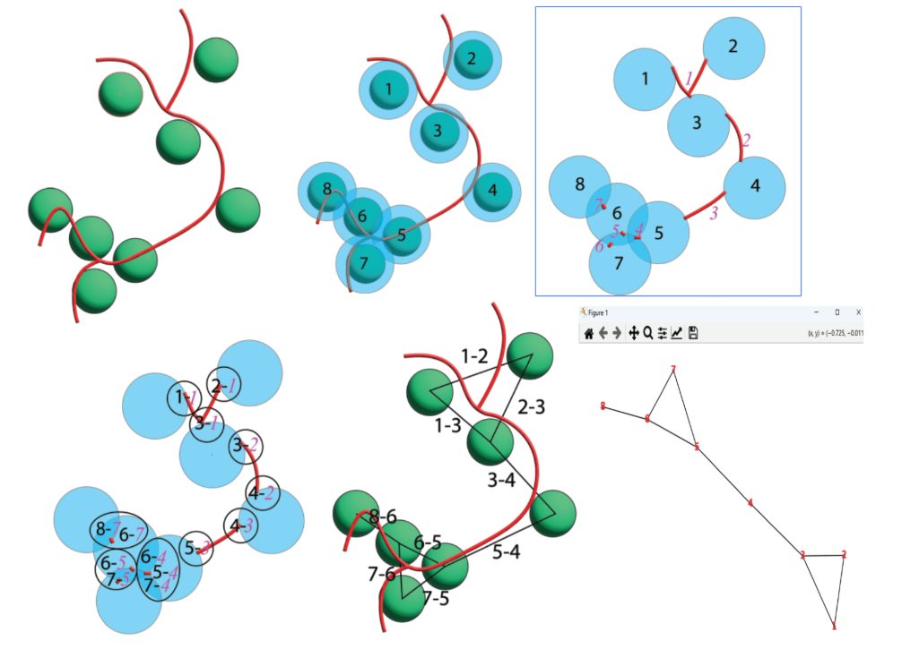
Nodes are expanded by their search distance, using a distance transform that assigns outer shell regions a label corresponding to the internal labeled node they are closest to.
The search region splits the edges: edges outside it become outer edges and those inside become inner edges. The edge pieces acquire unique labels conveying their identity.
Where parameter 5 is not used, outer edges are still dilated once to force them to overlap the search region by a single voxel. Each node’s search region can then be evaluated for which outer edge it interacts with.
Since inner edges may course through many search regions, an additional step finds their node-to-node connections. The border of the search region is acquired with the skimage
find_boundariesmethod; these node borders are extracted and used to isolate the inner edge pieces within them, which all acquire unique label IDs. Dilating those pieces once reveals which nodes touch them.The group of edges each node interacts with is sorted through, and any nodes interacting with the same edge are connected.
The connections create a NetworkX graph object for network analysis.
Press Run Calculate All to run the method. Output data populates the relevant areas — the four image channels for images, or the right-hand table widgets for spreadsheet-style properties.
Process → Calculate Network → Calculate Proximity Network
Connects objects in the nodes channel based on whether they fall within a user-defined distance of one another. These networks are useful for neighborhood-based analysis of cells. See Proximity Networks — Ideal for Cellular Data for a brief walkthrough.

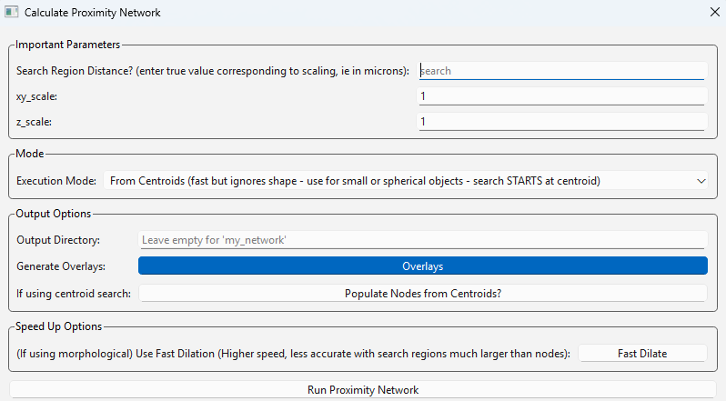
Parameter explanations
Search Region Distance… — the distance nodes search for other nodes to connect to, scaled by the
xy_scaleandz_scaleparameters, so where those are set correctly it can be treated as a real value such as microns. This may be skipped in favour of a number of nearest neighbors when using centroids, or the two may be combined to find the n nearest neighbors within a distance.xy_scale — a float setting the X/Y 2D plane pixel scaling to a real-world value, such as 5 microns per pixel. Presumed to be 1 by default.
z_scale — a float setting the Z 3D voxel depth to a real-world value, such as 5 microns per voxel. Presumed to be 1 by default.
Execution Mode
From Centroids… — searches from centroids for other centroids. This algorithm is faster for larger datasets and is ideal where nodes are well represented by centroids, such as small or relatively homogeneous spheroids. Because centroids are used, this option runs without any nodes image at all, provided the
node_centroidsproperty was loaded — useful when importing data already extracted from an image elsewhere as a set of centroids.From Morphological Shape… — searches from each node’s border in 3D space. Slower, but better suited to non-homogeneous or oddly shaped nodes.
Morphological — Using Distance Transform… — as above, but does not allow nodes to connect across the search regions of other nodes. Nodes find their immediate neighbors within the specified distance, producing a simpler network than option 2.
Create Networks only from a specific Node Identity? — appears only when the
node_identitiesproperty is assigned, offering a dropdown of your defined node identity subtypes. Where one is selected, only nodes of that subtype are used to make network connections, though they may connect to any other node type. Use this to simplify network structures when only one subtype’s relationship to the rest is of interest.Generate Overlays — executes Image → Overlay → Create Network Overlay and Image → Overlay → Create ID Overlay, overriding Overlay1 and Overlay2 respectively.
Downsample factor for drawing overlays…? (where the above is enabled) — a positive integer greater than 1 renders the overlays that many times larger.
Populate Nodes from Centroids? (centroid search only) — uses the centroids to create a new nodes image, placed in the nodes channel. The image starts at 0 in each dimension and is bounded by the highest-value centroid in each dimension. Since the centroid search requires only that
node_centroidsbe loaded, this allows an image to be created from centroids extracted elsewhere, opening up the other functions.Max number of closest neighbors… (centroid search only) — restricts nodes to that number of connections, connecting to their n nearest neighbors within the search region. This is a useful way to simplify dense networks. It is available only from the centroid search, and the search parameter may be skipped entirely in favour of this nearest neighbor search.
Use Fast Search…? (distance transform morphological only) — calculates the distance transform in parallel, followed by flood filling to expand labeled regions. Requires the
edtpackage. Search regions along connecting boundaries may be slightly rougher.
Algorithm explanation
Using the centroid searcher:
Centroids are normalized by the xy and z scalings where these differ.
Centroids are searched directly for connections, optimized via the
scipy.spatialKDTree class, a highly efficient data structure for exploring distances between points (https://docs.scipy.org/doc/scipy/reference/generated/scipy.spatial.KDTree.html).This tends to be very fast, and for very large data is likely the most feasible way to obtain networks.
Using the morphological searcher:
scipy.ndimage.find_objects()obtains bounding boxes around all labeled objects in the nodes channel.For each object, a subarray is cut out using its bounding box, including the object plus any additional space needed to perform the search or dilation.
The node object is boolean indexed within its subarray.
scipy.ndimage.distance_transform_edt()obtains a distance transform for the object, which is thresholded at the desired distance from the node and binarized.The binary dilated mask is multiplied against the original, non-indexed subarray to isolate other nodes specific to the dilated region.
These other nodes are stored in a growing node:neighbors dictionary used to build the network.
The process is parallelized across all available CPU cores, and will occupy the entire machine when given a large task.
Press Run Proximity Network to run the method. Output data populates the relevant areas — the four image channels for images, or the right-hand table widgets for spreadsheet-style properties.
Process → Calculate Network → Calculate Branchpoint Network
Connects the branchpoints of a branchy binary segmented image, such as blood vessels, converting them into network nodes. The binary image must begin in the edges channel, since nodes are generated at the branchpoints.
This brings up the menu to generate nodes from edge vertices. Once nodes are created, they search their immediate 3×3×3 neighborhood and assign connections based on which edges they encounter.
The method forks the node generation from edges method with suggested defaults preselected; see Process → Generate → Generate Nodes (From Edge Vertices) for parameter and algorithm explanations.
Process → Calculate Network → Calculate Branch Adjacency Network
Connects the adjacent branches of a branchy binary segmented image, such as blood vessels, converting the branches themselves — rather than the branchpoints — into network nodes. The binary image must begin in the edges channel.
This brings up the menu to label branches, followed by a proximity network of distance 1. The method forks the branch labeling method with suggested defaults preselected; see Process → Generate → Label Branches for parameter and algorithm explanations.
Process → Calculate Network → Calculate Centroids
Calculates and sets the node or edge centroid properties. A centroid is the center of mass of an object, and provides a low-memory way to track its general location.
Parameter explanations
Downsample Factor — temporarily downsamples the image in all three dimensions by the entered factor to speed up centroid calculation. Centroids are normalized back to the full-size image afterwards and, while not perfectly accurate, are close enough for most purposes. Some level of downsampling is generally recommended for larger images, provided the nodes can afford it.
Nodes with dimensions smaller than the downsample factor risk being removed from the image during calculation, resulting in no centroid assignment, so use a downsample appropriate to your node size.
Execution Mode
Nodes and Edges — finds centroids for both the node and edge channels.
Nodes — finds centroids for the nodes channel only.
Edges — finds centroids for the edges channel only.
Skip Node Centroids Without Identity Property? — when checked, nodes without an identity receive no centroid, which is useful where those nodes are not of interest.
Press Run Calculate Centroids to run the method. Output data is added to the tabulated data widget in the top right and sets the respective centroids property. The method runs on whichever channel is designated the active image in the bottom left.
Many methods requiring centroids automatically prompt to run this method if none have been calculated; running it in such cases is advised, or the other method may not run properly.
Algorithm explanation
The array is subdivided across all CPU cores for parallel processing.
The indices of all objects in each array are found via
np.argwhere().The centroid for each labeled object is obtained by taking the mean of its indices.
Process → Image → Resize
Resizes the image. Downsampling is especially useful for speeding up many process functions where resolution loss is not a major issue, and upsampling can restore an image to its original dimensions.

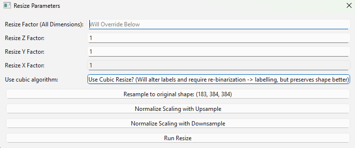
Parameter explanations
Resize Factor (All Dimensions) — a float greater than 0 resizing the image in all three dimensions by that factor.
Note
Most functions ask for a downsample factor, where a value greater than 1 applies a downsample. This function instead expects a decimal between 0 and 1 for downsamples, and values above 1 apply an upsample. A value of 0.33 downsamples the image in all dimensions by a factor of 3, while 3 upsamples by a factor of 3.
Resize Z Factor — as the resize factor, but applied only in the Z dimension, leaving X and Y unchanged. Any value entered in parameter 1 overrides this.
Resize Y Factor — as the resize factor, but applied only in the Y dimension, leaving X and Z unchanged. Any value entered in parameter 1 overrides this.
Resize X Factor — as the resize factor, but applied only in the X dimension, leaving Y and Z unchanged. Any value entered in parameter 1 overrides this.
Warning
Many NetTracer3D functions do not produce accurate results on images scaled differently in the x and y dimensions, as equal scaling in the 2D plane is assumed.
Downsample Algorithm - can be used to change from the default algorithm (which is quick and ideal for raw data and segmented images where the structures aren’t overly small). Options include using a sparse downsample instead. Sparse downsample will downsample the background while attempting to not eliminate labeled objects, which is ideal if you have a clean segmentation that you would like to preserve the shapes and locations of elements within while downsampling. Sparse downsampling, however, should not be used on raw datasets or on noisy segmentations (as it can enhance noise). The other option is the ‘cubic’ algorithm, which is slower and may better preserve shapes for visualization purposes only; it does not preserve labeling and should not be used on data intended for quantification.
Normalize Scaling with upsample — automatically runs an upsample along the low-resolution dimension to normalize the resolution. Appears only where
xy_scaleandz_scalediffer.Normalize Scaling with downsample — as above, but downsamples the high-resolution axis to normalize the resolution. Appears only where
xy_scaleandz_scalediffer.Resample to original shape — NetTracer3D tracks the shape of the pre-downsampled image, and this returns the images to that shape — useful, for example, after downsampling to speed up overlay generation.
This option appears only where images of different shapes have been loaded during one session, and may not always track the correct shape if many heterogeneous images are loaded in and out. The same result can be achieved by reloading the original-sized image, loading the resampled image into another channel, and accepting the option to resize the new channel to match.
Press Run Resize to run the method; pressing parameters 6, 7, or 8 also executes it as described. Because NetTracer3D does not support differently sized images across its channels, this method runs on all channels currently in use.
Algorithm explanation
All resize algorithms use the scipy.ndimage.zoom method:
https://docs.scipy.org/doc/scipy/reference/generated/scipy.ndimage.zoom.html
Process → Image → Clean Segmentation
A small window collecting methods useful for cleaning up segmentations.
Parameter explanations
Close — calls dilation followed by erosion; see their respective sections. Useful for filling small gaps that are not literal holes in a mask, at the risk of creating false connections and disfiguring the image at very large values.
Open — the reverse, eroding before dilating. Useful for eliminating noise, smoothing object borders, and severing small connections between objects that may not exist, at the risk of eliminating true small objects and disfiguring the image at very large values.
Connect Endpoints — prompts for a distance, then connects all endpoints in the segmentation, as appraised by 3D skeletonization, within that distance. The connection is a tapered cylinder of the same radii as the branches it merges. This is less capable than Trace Filaments, as it merges any endpoints within its distance, but is conceptually simpler and may suffice for some uses.
Fill Holes — calls the fill holes method. Holes are gaps completely enveloped by a mask from the perspective of the 2D stack; see the fill holes algorithm section.
Trace Filaments — calls the filament tracer, normally at Process → Generate → Trace Filaments, which cleans up segmentations of filamentous objects such as nerves or vessels.
Threshold Noise by Volume — brings up the threshold window to filter objects by volume range, for example to remove small noise. See the thresholding section.
Process → Image → Dilate
Expands the objects in an image. Several variants are available. This is generally how NetTracer3D evaluates neighborhoods starting from morphological objects, so many functions fork this method.
Parameter explanations
Dilation Radius — the amount to dilate, or expand, the nodes by in each dimension. This value is scaled according to the scalings in your image, or those assigned within the dilate window. For a 1-to-1 correspondence with voxels, set both scalings to 1 in the window; to correspond to a true distance such as microns, enter the scalings for your image and give the radius in that unit.
xy_scale — the per-pixel scaling in the 2D xy plane applied to parameter 1. This auto-populates with the
xy_scaleproperty set for the images, but any number entered is always used regardless of the property.z_scale — the per-voxel depth in the 3D z plane applied to parameter 1. This auto-populates with the
z_scaleproperty set for the images, but any number entered is always used regardless of the property.Execution mode
Parallel Distance Transform Based — attempts to compute the dilation in parallel on the CPU using the
edtmodule. Falls back to option 4 ifedtis not installed or the parallel computation fails.Preserve Labels — dilates objects without binarizing them, preserving labels. A window of additional parameters opens; see below.
Pseudo3D Binary Kernels — dilates in 2D across the XY and XZ planes to simulate a 3D dilation, binarizing the image first. This is intended for visualization rather than quantification, at small-to-medium dilations. It saves time but does not produce a perfect dilation, as it cannot see diagonally. For dilations that are particularly large relative to the starting objects, it may actually be slower than the distance transform.
Distance-Transform Based (Non-Parallel) — dilates via a distance transform, allowing more perfect dilations but often more slowly.
Press Run Dilate to run the method. The channel set as the active image is dilated, and the output is returned there.
Using Preserve Labels opens an additional window:
Fast Dilation — attempts a faster gray dilation. Binary dilation is achieved through parallelization via the
edtmodule rather than scipy, which requiresedtto be installed and working; see Installation.Once binary dilation regions are obtained they are labeled by flooding with the skimage watershed function, giving slightly rougher search regions along adjacent borders, which may not be desirable. Leaving this disabled uses scipy’s
distance_transform_edtto solve the gray dilation, yielding an exact voxel-to-voxel labeling scheme but calculated on a single CPU core and therefore potentially slow on larger images. The program always falls back to this if the parallel calculation fails.
Algorithm explanation
The pseudo-3D kernel method
Serial dilations in the XY and XZ planes are combined to simulate a 3D dilation. The distance to search in the X, Y, and Z dimensions is determined from the scalings for each.
That distance generates dilation kernels expanding the pixels until they encompass the search region. In the XY plane this kernel is a circle, with the search distance as its radius, since x and y scalings are assumed equal. In the XZ plane, where x and z scalings differ, the kernel is an ellipse, with the short axis the shorter search distance and the long axis the longer — which avoids the need to normalize resolutions.
The image is chopped along the Z axis so 2D dilations can run in parallel until all XY planes have been dilated, using the highly optimized OpenCV2 dilate algorithm (https://opencv24-python-tutorials.readthedocs.io/en/latest/py_tutorials/py_imgproc/py_morphological_ops/py_morphological_ops.html).
A copy of the image is chopped along the Y axis so 2D dilations can run in parallel until all XZ planes have been dilated, again with OpenCV2.
These outputs are combined to produce the pseudo-3D dilation.
Two exceptions apply:
For a 2D array, the method always hands off to a distance transform instead, since most distance transform algorithms perform well in 2D and are often faster than 2D dilation.
Where the search region is explicitly 1 voxel in all dimensions, the method hands off to
scipy.ndimage.binary_dilation()(https://docs.scipy.org/doc/scipy/reference/generated/scipy.ndimage.binary_dilation.html) with a simple 3×3×3 cubic kernel. This can be slow but generally handles small dilations with simple kernels well.
Note
The pseudo-3D kernel method handles dilation regions much larger than the original node poorly. An earlier alternative recursively called the method to perform serial dilations, but it was removed as redundant against the distance transform method, since pseudo-3D kernels produce large error at large dilations regardless.
Conceptually, the pseudo-3D kernel turns voxels like ········· into
++++++++ en masse.
The distance transform method
A distance transform converts an image into a map conveying how far each non-zero pixel is from zero. It was added to obtain perfect dilations in lieu of true 3D kernel-based dilating, since the scipy 3D dilation option was already slow.
Inverting an image and obtaining the distance transform of the inversion gives how far each background voxel is from the objects, via
scipy.ndimage.distance_transform_edt().That transform becomes an essentially perfect binary dilation through boolean indexing.
The downside is speed, though the slowness is independent of dilation size: on images of around 3 GB this may take twenty minutes depending on your CPU. It therefore exists as the accuracy-first option, while pseudo-3D kernels suit small dilations where small error regions do not matter, or where the question is merely whether other objects are in the general vicinity.

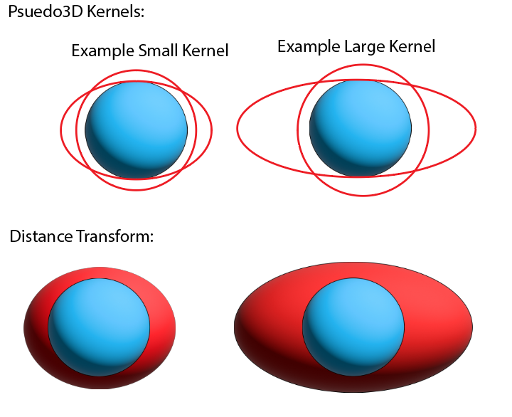
Top left: an object (cyan sphere) with its expansion kernel (red) for a small pseudo-3D kernel dilation. This is not exactly what the output looks like — imagine these kernels applied to every voxel in the image. To the right is the same kernel with a large dilation in a space with different scalings, which produces greater error, since regions diagonal to the sphere are inevitably excluded. Below is the same scenario with a distance transform, which gives a more or less perfect expansion.
If preserving labels
Preserving labels adds a step referred to as smart dilate:
The same binary dilation as above is determined.
With the distance transform method, the indices of the distance transform of the inverted array are also returned, populating each index with the index of the background value it was closest to. This structure is more cumbersome than a plain distance transform and occupies three times the RAM, but allows any index in the array to be queried for which node it belongs to, since in the inverted image the nodes became the background.
The dilated regions are obtained by subtracting the original binary nodes from the binary dilated image. These shell regions are split up and parallelized across all CPU cores.
The indices of all shell regions are searched, the index of the node each belongs to is obtained from the distance transform index image, the label of that node is found, and the binary index in the dilated image is reassigned to its proper label.
The chunks are recombined to give the label-dilated array.
Process → Image → Erode
Shrinks objects in an image, essentially reversing dilation.
Parameter explanations
Erosion Radius — the amount to erode, or shrink, the nodes by in each dimension. This value is scaled according to the scalings in your image, or those assigned within the window. For a 1-to-1 correspondence with voxels, set both scalings to 1; to correspond to a true distance such as microns, enter the scalings for your image and give the radius in that unit.
xy_scale — the per-pixel scaling in the 2D xy plane applied to parameter 1. This auto-populates with the
xy_scaleproperty set for the images, but any number entered is always used regardless of the property.z_scale — the per-voxel depth in the 3D z plane applied to parameter 1. This auto-populates with the
z_scaleproperty set for the images, but any number entered is always used regardless of the property.Execution mode
Parallel Distance-Transform Based — erodes objects via a distance transform calculated in parallel with the
edtmodule, falling back to the scipy version ifedtis not installed or the parallel calculation fails.Distance-Transform Based (Non-Parallel) — uses the scipy non-parallel distance transform.
Preserve Labels (Parallel) — uses
edtto erode while maintaining object labels. Borders shared between labeled objects are eroded as well.Preserve Labels (Non-Parallel) — uses the scipy non-parallel distance transform to erode while preserving labels.
Press Run Erode to run the method. The channel set as the active image is eroded, and the output is returned there.
Algorithm explanation
Erosion is accomplished by calculating the distance transform and thresholding at
the desired erosion distance. Where labels are kept, the skimage
find_borders method boolean thresholds out the borders so that the resulting
distance transform tells the labeled objects to move away from one another.
Erosion can be combined with dilation to perform an open or close operation. An
open operation — erosion followed by an equivalent dilation — is a cheap way to
split apart objects that are barely touching while eliminating noise, though it
can disfigure masks at large values. A close operation — dilation followed by an
equivalent erosion — fuses nearby objects while keeping the mask a similar shape
and size, which is useful in NetTracer3D for fixing segmentation artifacts such
as holes without touching the diledge parameter in the main method. Both are
available from the Clean Segmentation function.
Process → Image → Fill Holes
Fills holes in an image, typically a binary segmentation, to eliminate artifacts.
Parameter explanations
Only Use 2D Slicing Dimensions — when disabled, the algorithm attempts to fill holes in all three dimensional planes; when enabled, only in the XY plane. Enabling this may produce unusual artifacts in some segmentations, since they were likely segmented from a 2D XY perspective, though these can usually be removed by opening.
Fill Small Holes Along Borders — when enabled, hole-like regions on the image border are filled as long as the border they share with the image is less than 8% of the length of that border. When disabled, no holes on the image border are filled.
Place Hole Mask in Overlay 2… — places the hole mask in Overlay2 rather than filling directly. The mask can then be thresholded or selected arbitrarily for more specific holes and relayed back to the image by selecting the result (right click → select all) and imposing it onto the original image (right click with selection → selection → override channel with selection).
Press Run Fill Holes to run the method. The channel set as the active image is filled, and the output is returned there.
Algorithm explanation
The algorithm iterates through the 2D planes of an image — XY only by default, plus YZ and XZ where parameter 1 is enabled.
For each plane, the 2D image is inverted and
scipy.ndimage.label()finds contiguous regions (https://docs.scipy.org/doc/scipy/reference/generated/scipy.ndimage.label.html).Regions that do not share a border are designated holes and filled.
Regions that share a border are filled if they share less than 8% of the length of that border, unless parameter 2 is disabled.
The output image is always binary.
Process → Image → Binarize
Binarizes an image, setting all foreground regions to 255 — the 8-bit maximum — and background regions to 0.
Parameter explanations
Method
Total Binarize — sets all nonzero regions to 255. This is not intended for raw data, but can reset labeled segmentations.
Predict foreground — uses Otsu’s method to predict the foreground, setting it to 255 and predicted background regions to 0. A quick option for segmenting data where the signal-to-noise ratio is good enough.
Press Run Binarize to run the method. The channel set as the active image is binarized, and the output is returned there.
Process → Image → Label Objects
Labels objects in an image, assigning all touching, nonzero areas a distinct numerical identity. Raw data would not typically be labeled, but this can be applied to binary images to reset them or separate them into unique nodes or domains.
This method has no parameters. Press Run Label to run it. The channel set as the active image is labeled, and the output is returned there.
Process → Image → Neighborhood Labels
Labels objects in one image based on their proximity to labeled objects in a second image: every non-zero object in the first image takes on the label of the closest labeled object in the second. This is a useful way to define the relationship of objects in one image to another.
Parameter explanations
Prelabeled Array — the labeled image used as the seeds for labeling the other image.
Binary Array — the other, presumably binary, image to be labeled by the first.
Labeling Mode
Label Individual Voxels based on proximity — the default. Each non-zero voxel in the binary image is assigned the label of the closest object in the labeled image.
Label Continuous Domains that border labels — a more nuanced version labeling only nearby voxels that are continuous in space with each label. Binary voxel elements touching no labels are removed. This is useful where, for example, a binary close was used to refine a segmentation, that segmentation was labeled (or processed with the branch labeling algorithm), and the original segmentation is to be relabeled based on the closed one.
Correct Nontouching Labels in Post — where the resulting labeled image contains labels that are not touching, the largest instance keeps its label while the others merge with the label they touch the most, or take a new label if they touch none. This is executed by default for the second mode in parameter 3.
Press Run Smart Label to run the method. The channel referenced in parameter 2 is labeled, and the output is returned there.
Algorithm explanation
This is ostensibly the same method used in smart dilate, applied in a different context.
In the primary labeling mode:
The prelabeled array is binarized, inverted, and a distance transform with indices is calculated, providing a map of which indices belong to labeled regions in the prelabeled array.
The binary array is split up and parallelized across all CPU cores.
The indices of all positive binary array regions are searched, the index of the label each belongs to is obtained from the distance transform index image, and the binary index is reassigned to its nearest label.
The chunks are recombined to give the label-dilated array.
In the second labeling mode:
Rather than labeling the closest elements outright, the binary image is skeletonized first. The skeleton pieces check which label they are touching and inherit it. This labeled image is combined with the skeleton to give it extensions into the nearby binary regions, allowing a more nuanced label.
Correct Nontouching Labels is then always performed on top of this.
For Correct Nontouching Labels, each label is evaluated for contiguity in space. Where a label is not contiguous, its largest volume keeps the label, while the other pieces take on whichever label they touch most, or a new label entirely if they touch nothing.
Process → Image → Threshold/Segment
Calls the threshold/segmenter, which supports volumetric, intensity-based, and ML thresholding. This is the same window opened by the pencil widget; see Segmenting Data for a tutorial walkthrough.
Parameter explanations
Execution Mode
Using Label/Brightness — opens the threshold window for intensity-based thresholding.
Using Volumes — opens the threshold window for volume-based thresholding.
Using Radii — opens the threshold window for radius-based thresholding.
Using Node Degree — opens the threshold window for degree-based thresholding, meaning the number of network connections. This applies only to the nodes image and requires the network to have been computed.
Select — starts the threshold window with the option chosen above. The active image is the threshold target.
Machine Learning — starts the machine learning segmenter, which is better suited to thresholding based on morphological patterns in the image.
The ML segmenter always segments, and requires, the image in the nodes channel. It uses Overlay1 to store training data, the highlight overlay to segment, and Overlay2 for the output. For these reasons ML segmenting should typically be done in a session separate from the rest of the analysis.
Algorithm explanation
Intensity-based segmenter
Takes the minimum and maximum values designated by the user and thresholds the array for values falling between them.
Volume-based segmenter
The volume thresholder first finds volumes for the image using Analyze → Stats → Calculate Volumes, skipping this step where they have already been calculated. It then uses those volumes to decide which label values lie between the user-designated minimum and maximum, and thresholds accordingly.
Warning
Where the volumes property was designated for a channel earlier and the image was changed afterward, this method will likely not function properly and the program should be reset.
Note
For both of the above segmenters, closing the thresholder without thresholding selects and highlights the thresholded regions in the highlight overlay instead, provided the nodes or edges channels are active. This is a good way to select regions arbitrarily by volume or intensity for use in any function that runs on selected objects.
Machine learning segmenter
The segmenter takes user-designated training regions, computes feature maps around them, and uses the corresponding feature map points to train a LightGBM classifier that can later segment the entire image.
A feature map is an abstracted dataset — produced by a neighborhood-considering algorithm such as a Gaussian blur — that allows a coordinate in an image to convey something about what its neighborhood looks like. The chunks used to build feature maps are, as of writing, 49³ for 3D neighborhoods. 2D neighborhoods are chunked in 2D only where the 2D plane exceeds 64³ pixels, in which case the plane is divided until each chunk falls below that size. All chunks mentioned below are these sizes.
A LightGBM Classifier is initialized. (https://lightgbm.readthedocs.io/en/latest/Python-Intro.html).
Whenever a model is trained, chunks around the training data are extracted and turned into mini feature maps. Values from positive training regions are fed to the LightGBM classifier as good numbers, and those from negative training regions as bad numbers.
When the volume is segmented, chunks are converted into feature maps, and each voxel in the chunk shows its corresponding index in the feature map to the classifier to determine whether it should be considered foreground.
The output is placed in Overlay2. The preview segment method works similarly, except that it does not interrupt the user, instead initiating a parallel thread that processes chunks at the user’s Z-plane near their mouse position.
The feature maps for the quick model (sigmas 1, 2, 4, 8) are:
The original image.
Gaussian blurs for sigma values 1, 2, 4, 8.
Difference of Gaussians for all sigma pairs: 1-2, 1-4, 1-8, 2-4, 2-8, 4-8.
Gradient magnitude for the original image and each Gaussian-smoothed image, computed via finite-difference kernels in each spatial dimension.
Laplacian, the sum of second derivatives, for the original image and each Gaussian-smoothed image.
The feature maps for the detailed model (sigmas 1, 2, 4, 8, 16) include everything above, with the additional sigma=16 scale, plus:
Hessian eigenvalues — all eigenvalues of the Hessian matrix at each voxel or pixel, computed for the original and each Gaussian-smoothed image. 2D yields 2 eigenvalues, smallest and largest; 3D yields 3, sorted ascending. Captures local curvature and tubular and sheet-like structures.
Structure tensor eigenvalues — the gradient outer-product tensor is smoothed at integration scales γ = 1 and γ = 3 and its eigenvalues extracted, computed for the original and each Gaussian-smoothed image at each integration scale. Captures local orientation and anisotropy, meaning edges, ridges, and corners.
Local statistics — for each sigma value, a sliding window of size (1 + 2·sigma) is applied to the original image to compute the local minimum, maximum, mean, and variance.
The quick model is generally preferable for images with good SNR, while the detailed model suits tougher segmentations. For RGB images each channel is processed independently, requiring three times as many maps. Training by 2D patterns uses 2D alternatives to the maps described above, and training with GPU uses cupy methods to obtain them.
Feature maps are computed in parallel. Chunk processing is sequential to preserve RAM, especially given feature map bloat, but some speed is recouped by computing the maps themselves in parallel.
Process → Image → Mask Channel
Uses the binarized version of one channel to mask another.
Parameter explanations
Masker — the array used to create the mask. It is always binarized first, with regions not equal to 0 serving as the regions that remain in the target array. Any of the four main channels may be selected, or the highlight overlay.
To be Masked — the target array to be masked. Any regions outside the mask are excluded. Any of the four main channels may be selected.
Output Location — where the masked output is placed. Any of the four main channels may be selected, or the highlight overlay.
Press Mask to run the method.
Process → Image → Crop Channels
Crops all available channels. This can also be called automatically for a target region by holding Shift while left clicking and dragging in the image viewer window.
Parameter explanations
The parameters are the minimum and maximum values in Z, Y, and X to include in the cropped output.
Press Run to crop. All four channels are cropped, but the current properties are unaffected. To purge nodes that no longer exist from the centroids, identities, and other properties, recalculate the centroids, or remove absent nodes more efficiently with Process → Modify Network → Remove Any Nodes not in Nodes Channel from Properties.
Process → Image → Channel dtype
Changes the data type of a channel, which is useful for preserving memory where larger data types are not needed.
Parameter explanations
Change to? — the datatype the active image is changed to. Options are unsigned 8-bit int, unsigned 16-bit int, unsigned 32-bit int, 32-bit float, and 64-bit float.
Press Run to change the active image to the desired datatype.
Process → Image → Skeletonize
Skeletonizes an image, reducing it to its most medial axis. Skeletons are a good way to extract a simplified version of the locations and shapes of image objects.
Parameter explanations
Remove Branches Pixel Length…? — the length, in unscaled pixels or voxels, of terminal branches or spines to remove from the skeleton output. Only terminal branches are removed; internal branches are never affected regardless of how large this value is, and branches longer than the designated length are not trimmed.
Removing branches punches holes into branchpoints in order to remove them fully. These holes are not filled by default, but can be filled by dilating the image once, then skeletonizing again or eroding once.
Spine removal mode
External spines only — removes all spines below the designated length, provided they are not deep to other skeleton structures.
Can remove deeper spines — removes spines beyond external ones, provided the involved vertices can be reached from any external segment. This chews further down, so a meshed skeleton protruding at points along a main filament can be cleaned away while retaining the main filament.
Attempt to Auto Correct Skeleton looping — the skeletonize algorithm tends to leave fat loop artifacts in thick regions. Enabling this has NetTracer3D attempt to remove those artifacts and replace them with simple medial skeletons.
Algorithm explanation
3D skeletonization is achieved via
skimage.morphology.skeletonize()(https://scikit-image.org/docs/stable/auto_examples/edges/plot_skeleton.html).Where parameter 2 is enabled, NetTracer3D runs its Process → Image → Fill Holes method, which for the most part successfully fills loop artifacts and returns them to 3D blobs, then runs skeletonization again, which is often able to skeletonize the blobs accurately.
Where parameter 1 is enabled, NetTracer3D iterates along the skeleton and identifies endpoints as regions with only one neighbor. It crawls up from those endpoints along the skeleton a number of times equal to the entered value, or until it hits a junction, removing all associated positive voxels. A branch that is too long, never reaching its parent branch, is not trimmed at all. Because this leaves holes in the skeleton where a branch reaches its parent, the method dilates the result once and skeletonizes again to fill them.
Process → Image → Binary Watershed
Watersheds a binary image, splitting apart — by labeling — fused objects that look like two separate objects. It is intended for binary segmentations rather than segmentations of raw images, and is ideal for separating overlapping objects such as adjacent cells.
Parameter explanations
Smallest Radius — the smallest radius of objects to be split off by the watershed. Objects smaller than this may be thresholded out. This value always overrides the proportion parameter below and is the more intuitive of the two; use a conservative value slightly smaller than your smallest object’s radius.
Proportion — controls how aggressive the watershed is; see the algorithm explanation. This is the proportion, from 0 to 1, of the distance transform value set — that is, its unique elements — to exclude, so 0.2 excludes 20% of the set of all distance transform values.
Values closer to 0 are less likely to split objects but also will not evict small objects from the output. Values slightly further from 0 split more aggressively, while values closer to 1 become unstable, leading to evicted objects or labeling errors. Something between 0.05 and 0.4 is recommended depending on the data, or enter a smallest radius above to avoid using this parameter. The equivalent smallest radius is reported in the command window.
Execution mode
Parallel — uses
edtto solve the distance transform in parallel, which is faster. Falls back to the scipy version ifedtis not found or the parallel calculation fails.Non-Parallel — uses scipy’s
distance_transform_edt.
Algorithm explanation
A distance transform is computed on the binary image, identifying regions that lie close to the background.
These regions are eroded according to Proportion: at the default of 0.05, only internal distance values within the top 5% of the set of all distance values are kept, to serve as seed kernels for relabeling. Where the smallest radius parameter is used instead, the program computes the corresponding proportion.
The seed kernels are assigned unique labels with
scipy.ndimage.label().Relabeling — the watershed itself — from the kernels onto the binary image is completed with the skimage watershed method.
This algorithm can be slow on large images. Proportion is difficult to select, so smallest radius is the better option where it is known; the measurement points can be used to obtain that value. For proportion, 0.05 works well in many cases, but where watershed outputs are not quite right, try increasing it from 0.05 toward around 0.5.
Before watershedding

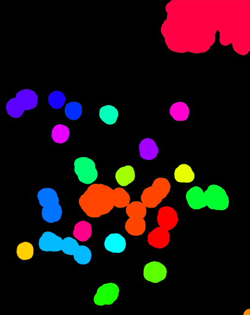
After watershedding

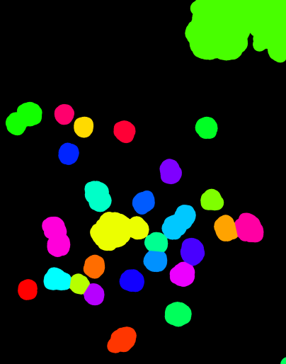
Process → Image → Gray Watershed
Watersheds a grayscale image whose foreground has been segmented out, separating and labeling objects by their user-designated size and blobbiness. This is best used as a quick way to segment cells without training ML models.
The foreground must be segmented first, which is easily done by intensity thresholding via the pencil widget. Without it, the entire image ends up labeled based on the peaks, which is rarely desired.
Parameter explanations
Minimum Peak Distance… — the shortest distance between labeled components, and important to set correctly for this function to perform well. For cells, measure the distance between two adjacent, touching cells with the measurement points tool. The peak is based on cell intensity, so this is the distance between a pair of high intensity values on those cells. Too small a value over-labels groups of cells; too large a value under-labels them.
Minimum Peak Intensity… — ignores any part of the image below this intensity when finding peaks.
Algorithm explanation
The skimage
peak_local_maxfunction finds the peaks in the image — regions of high intensity — separated by the parameters above.These peaks are drawn onto a copy of the array.
The original array is binarized and its cells labeled by proximity to the peaks via the skimage watershed method.
Process → Image → Invert
Inverts an image, setting high values to low and vice versa. This method has no parameters. Press Run Inverted to run it; the channel set as the active image is inverted, and the output is returned there.
Process → Image → Z-Project
Z-projects an image, superimposing all XY slices into a single 2D slice.
Its only parameter is Execution Mode, which controls how the projection is generated: max assembles it from the maximum value at each location in the stack, mean takes the means, min the minimum values, sum the sum of the values, and std the standard deviation.
Press Run Z-Project to run the method. All four channels are projected.
Process → Image → Find Borders of Labels
Alters a labeled channel to instead just be the borders of said labels. There are no parameters, this method simply runs the skimage.segmentation.find_boundaries method on the active channel.
Process → Image → Normalize Brightness
Normalizes the brightness of a 3D image. 3D images are sometimes brighter closer to where the light hits them, typically at the top of the Z-stack, though the bias may also lie in the X/Y plane.
A stack of 2D distance transforms picks out shells at varying depths in the image. The median brightness of those shells assembles a vector field describing how brightness changes with depth into the tissue, and every voxel is then transformed to mitigate those changes. Each axis is normalized individually and serially.
This will not necessarily transform data to appear exactly as it would in the absence of light scattering, but it is a reasonable approximation for datasets intended for intensity-appraising methods such as the identity assignment functions.
Running this normalizes the active channel. The only parameter is the number of shells to use, which is 5 by default.
Process → Generate → Generate Nodes (From Node Centroids)
The third submenu, Generate, contains functions that use your data to create new datasets.
This method takes the node_centroids property and uses the centroids to
populate a new image, with each centroid assigned as a labeled point, placing it
in the nodes channel. It exists for cases where the centroids property alone was
loaded — from a previous session, or extracted from another analysis tool — and
the image functions are now needed.
This method has no parameters. Run it and the node centroids, where assigned, become a new nodes image.
Process → Generate → Generate Nodes (From Edge Vertices)
Creates branchpoint networks; see Branchpoint Networks for a brief walkthrough. It takes a binary segmentation in the edges channel, skeletonizes it, and places new nodes along any branchpoints in the skeleton.

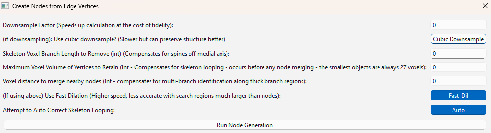
Parameter explanations
Skeleton Voxel Branch Length to remove… — the length, in unscaled pixels or voxels, of terminal branches or spines to remove from the skeleton output. Only terminal branches are removed; internal branches are never affected regardless of how large this value is. Branches removed entirely do not produce a branchpoint, making this an effective way to handle artifacts caused by spiny skeletons.
Spine removal mode
External spines only — removes all spines below the designated length, provided they are not deep to other skeleton structures.
Can remove deeper spines — removes spines beyond external ones, provided the involved vertices can be reached from any external segment. This chews further down, so a meshed skeleton protruding at points along a main filament can be cleaned away while retaining the main filament.
Amount to expand nodes… — enlarges branchpoint nodes before labeling, so that nearby ones merge. This is one way to handle an abundance of nearby nodes resulting from odd skeleton structures, though it can generally be ignored.
Use fast dilation — attempts to parallelize node merging, where it is happening at all, via the
edtmodule rather than scipy. This requiresedtto be installed and working; see Installation. Leaving it disabled uses scipy’sdistance_transform_edtto expand nodes on a single CPU core, which may be slow on larger images. The program always falls back to this if the parallel calculation fails.Downsample Factor — temporarily downsamples the image in all three dimensions by the entered factor to speed up calculation. For branch-related functions, downsampling not only speeds up calculation but may also simplify the skeletonization of thick objects; the trade-off is a loss of resolution on thin objects, which should be considered when using downsampling to alter skeletonization specifically.
Select Run Node Generation to run the method. The edges are skeletonized and the new nodes load into the nodes channel.
Algorithm explanation
3D skeletonization is achieved via
skimage.morphology.skeletonize()(https://scikit-image.org/docs/stable/auto_examples/edges/plot_skeleton.html).For 3D volumes, NetTracer3D runs its Process → Image → Fill Holes method, which for the most part successfully fills loop artifacts and returns them to 3D blobs, then runs skeletonization again, which is often able to skeletonize the blobs accurately.
Where parameter 1 is enabled, NetTracer3D iterates along the skeleton and identifies endpoints as regions with only one neighbor. It crawls up from those endpoints along the skeleton a number of times equal to the entered value, or until it hits a junction, removing all associated positive voxels.
NetTracer3D iterates through the entire skeleton, exploring the immediate 3×3×3 neighborhood of each voxel. Branchpoints are identified by setting the center skeleton piece of the neighborhood to 0, then using
scipy.ndimage.label()to assign distinct IDs to all non-touching elements remaining. Where at least 3 distinct elements exist, the location is considered a branchpoint and added to an output array.Where parameter 3 is enabled, the branchpoints are dilated to merge nearby branchpoints, and the results relabeled. Fast dilation uses a parallelized rather than single-core distance transform for this.
The newly labeled branchpoint array is placed in the nodes channel for use in making branchpoint networks.
Process → Generate → Label Branches
Labels the branches of a binary mask, presumably segmented from a branchy structure; see Labeling Branches and Branch Networks for a brief walkthrough. Labeling branches is a way to create networks through branch proximity, or to label an image with meaningful domains for use in connectivity networks, radius calculations, and so on.

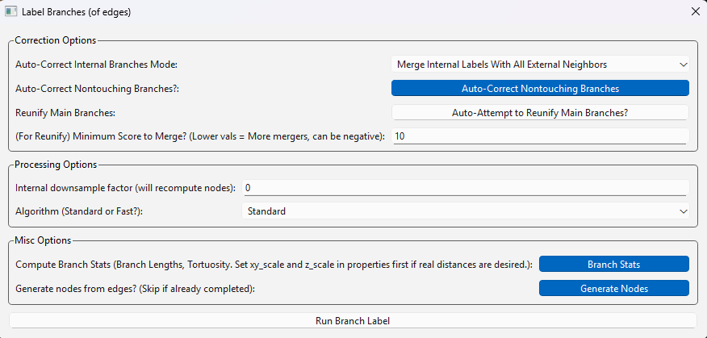
Parameter explanations
Auto-Correct Internal Branches Mode — thick branches wrongly split up because skeletonization handled them poorly, usually due to messy segmentations, are addressed by an additional algorithm that merges branches not touching the background with nearby branch regions that are.
The default, Merge Internal Labels with All External Neighbors, combines any label not touching the background, together with the external neighbors it touches, into a single label. This is generally the version to enable.
Merge Internal Labels With Non-Branch-Like External Neighbors performs a similar merger but leaves alone any external branches touching the merging region if those branches appear more branch-like, judged by the ratio of surface area bordering the merging region against the background. This is useful where the merge appears to be causing obviously separate branches to merge with a label region, which is mainly prevalent when parameter 3 is enabled. The option can also be disabled entirely.
Auto-Correct Nontouching Branches…? — branches are labeled by splitting their skeleton at the branchpoints and labeling the skeleton pieces. The larger branch regions are then labeled according to which internal filament each nonzero voxel is closest to, which means a very thick branch with small branches beside it may inadvertently assume the wrong label in its outer regions. This is uncommon but possible.
This correction takes any labels not physically joined in space and relabels them: the largest instance of the non-contiguous label keeps its label, while the other pieces inherit the label of whichever neighbor they border most, or receive a new one if they border nothing.
Reunify Main Branches — by default a branch is the structure between two branch points, but a large branch may warrant treatment as a single object regardless of what branches off it — a whole tree trunk rather than a series of trunk segments. This has the program attempt to reunify contiguous branches. At each branchpoint junction, only a single pair can remake a connection.
Minimum score to merge…? (for reunify) — a more positive value makes branch reconnections less likely. In testing, only values between 20 and 40 made a difference: below 20 a pair was almost always connected at a branchpoint, and above 40 no reconnections occurred.
Internal downsample… — temporarily downsamples the image in all three dimensions by the entered factor to speed up calculation. For branch-related functions, downsampling not only speeds up calculation but may also simplify the skeletonization of thick objects; the trade-off is a loss of resolution on thin objects.
Algorithm
Standard — uses scipy’s
distance_transform_edtto compute which branch labels belong to which skeleton segment. This can be slow on large images but produces well-labeled borders.Fast — uses skimage’s watershed function to flood branch regions from their skeleton segments. Generally faster, but produces rougher labels along borders where certain branches may take on odd shapes. Use this for large images where processing time matters more than exactness at borders.
Compute branch stats — also calculates the branch lengths and tortuosities for each branch.
Generate Nodes from edges? — this method forks Process → Generate → Generate Nodes (From Edge Vertices) and relies on the nodes it generates for its labeling scheme. Usually this should be left enabled so it can populate its own nodes, but where that function has already been run and its result in the nodes channel is satisfactory, disabling this skips running it again.
Selecting Run Branch Label calls the Generate Nodes (From Edge Vertices) window, so all of its corrections can additionally be applied; see that section above. Select Run Node Generation to run the method. The edges are branch labeled and the new nodes, the branchpoints, load into the nodes channel.
Algorithm explanation
The branch labeler begins with the same steps as Generate Nodes (From Edge Vertices); see its section above.
Once branchpoint nodes are generated, they are used as a mask to break up the skeleton.
The broken skeleton pieces are labeled with
scipy.ndimage.label(), which assigns non-touching objects unique label IDs, ideally producing one skeleton piece with a unique ID within each branch.The branches themselves acquire the label of their branch piece via smart label; see Process → Image → Neighborhood Labels.
Where the reunify parameter is used, each branchpoint junction of endpoints compares all branches considering reconnection. Branches are scored on shared characteristics such as similar radii and similar direction, and those with the highest score are reconnected, provided any exceed the threshold.
See Analyze → Stats → Morphological → Calculate Branch Stats for how the branch statistics are obtained.
Process → Generate → Trace Filaments
Intended for segmented data of filamentous structures such as nerves or vessels, which may be binary or simply have the background removed. It traces a refined filamentous structure over the segmentation, removing noise, filling gaps, and smoothing edges — a straightforward way to refine filament segmentations before branch labeling.

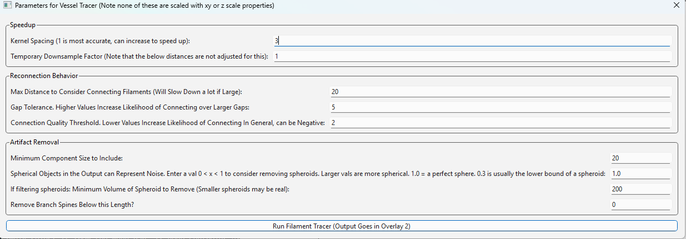
Parameter explanations
Kernel Spacing — higher values use fewer kernels to trace the filaments, which may slightly decrease accuracy but noticeably speeds up processing on larger images.
Temporary Downsample Factor — an integer greater than 1 applies that level of downsample while tracing, again trading possible accuracy for speed.
Max Distance to Consider Connecting Filaments — each filament endpoint evaluates nearby filaments to decide whether to connect, looking outward 20 voxels by default. Increasing this allows larger distances to be considered, but the task grows with cubic complexity, since the search region is a sphere.
Gap Tolerance… — filaments are reluctant to connect over large distances even when searching across them; increasing this makes such connections more likely.
Connection Quality Threshold — lower values make connections of any sort less likely, higher values make them more frequent.
Minimum Component Size to Include — once filaments are connected, those with fewer internal points than this value are filtered out, which removes small noise.
Spherical Objects… — the sphericity of traced filaments that should be removed. At the default of 1.0 this does nothing and sphere filtering is skipped; entering a lower value filters out any object with a sphericity above it. Sphericities range from 0 to 1, with 1 the most spherical. Filaments should not usually be spherical, so this option removes such artifacts.
If filtering spheroids… — only detected spheroids larger than the indicated volume are removed. Small objects are better handled by parameter 6, so this targets obviously incorrect large spheres.
Remove Branch Spines…? — removes spines along branches below the entered length while drawing filaments, which smooths potentially jagged filaments. This can usually be skipped.
Spine removal mode
External spines only — removes all spines below the designated length, provided they are not deep to other skeleton structures.
Can remove deeper spines — removes spines beyond external ones, provided the involved vertices can be reached from any external segment. This chews further down, so a meshed skeleton protruding at points along a main filament can be cleaned away while retaining the main filament.

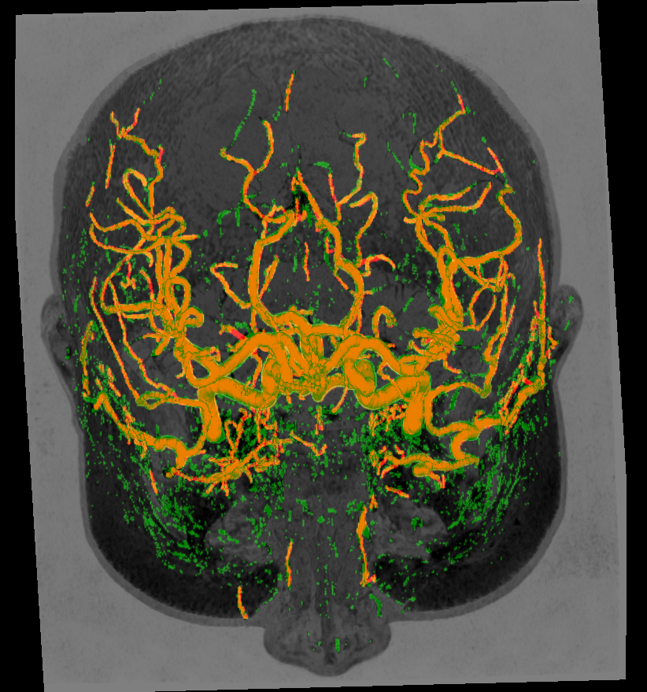
The gray image is an angiogram of a brain, with a somewhat messy segmentation of the cranial vessels in green. The results of the filament tracer, using default parameters, are shown in red — the segmentation has been cleaned up considerably.
Algorithm explanation
Remove small noise objects — filters out tiny connected components under 10 voxels.
Compute skeleton — extracts the 3D skeleton of the binary segmentation.
Compute distance transform — calculates distances to the nearest background voxel for radius estimation.
Sample kernel points — selects evenly spaced points along the skeleton using topology-aware subsampling.
Extract kernel features — computes geometric features for each kernel point: radius, direction, and endpoint status.
Build skeleton backbone graph — connects all neighboring kernel points along the skeleton.
Connect endpoints across gaps — bridges gaps between disconnected endpoints that should be connected, scoring each potential connection on shared characteristics; filaments travelling in the same direction with similarly sized radii are likely to be connected.
Screen noise filaments — removes entire connected components that are likely noise, based on geometric scores.
Reconstruct vessel structure — draws tapered cylinders between connected kernels to create the final traced structure.
Filter spherical artifacts (optional) — removes large spherical blobs that do not match vessel morphology, calculating sphericity as described under Analyze → Stats → Morphological → Calculate Sphericities.
Process → Generate → Generate Voronoi Diagram
Generates a Voronoi diagram from the node_centroids property, turning the
centroids into an image whose labeled cells represent the region closest to each
centroid. This offers an alternative to the distance transform for defining node
neighborhoods, which can then be used for connectivity networks.
Because the Voronoi diagram is limited to defining neighborhoods surrounding centroids, this applies only to nodes that are small or homogeneous spheroids. Voronoi diagrams have other uses in spatial mathematics, but NetTracer3D only offers the option to generate one and does not use it directly for anything else.
Select the method from the menu bar to run it. Where node_centroids exist,
their Voronoi diagram is generated and loaded into Overlay2.
Algorithm explanation: the method runs smart dilate with a maximal dimension length of the image as the dilation parameter.
Process → Generate → Generate Convex Hull
Creates a convex hull around the non-background data of the active image. The convex hull is the smallest convex 3D shape that can encapsulate your data, and is generated as a binary mask in Overlay2.
This defines the volume your data occupies, and can also serve as a mask distinguishing foreground from background for functions that require one, such as the Ripley’s function and the 3D nearest neighbor heatmaps.
Process → Generate → Generate Artificial Hexagonal Nodes
Creates a set of labeled hexagons of arbitrary size in Overlay2, filling either the entire image or only a masked region. These serve as artificial cells for neighborhood detection via proximity networks.
With multichannel data, assign the hexagons identities via File → Images → Node Identities → Assign Node Identities…, then generate a proximity network followed by Analyze → Network → Create Communities Based on Node’s Immediate Neighbors.
When generating the hexagons, specify a side length and optionally apply an xy and z scale where the data is anisotropic in z. A downsample factor generates them faster. The output can be masked by binary data in the nodes channel, which is useful for excluding background from receiving hexagons.
For 3D data, the method generates rhombic dodecahedrons by default, a 3D shape that tessellates well. This can be changed to hexagonal prisms, which is faster but not a true 3D tessellator.
Process → Modify Network/Properties
The final option in Process provides several ways to transform network structure after calculation.

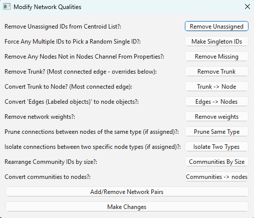
Parameter explanations
Remove Unassigned IDs from Centroid List? — some ID-oriented functions expect all nodes to have an ID. This removes all centroids of nodes not associated with one, so that the centroids can be used to make proximity networks without concern for unassigned IDs.
Force Any Multiple IDs to Pick a Random Single ID? — a node with multiple identities randomly picks one. This is useful for identity visualization, such as code identities, where many identity permutations would otherwise clutter the output.
Remove Negative IDs — removes negative identities created to show which identities nodes lack, for example from the threshold identity assigner.
Remove Any Nodes Not in Nodes Channel From Properties? — removes any node from the network,
node_centroids,communities, andnode_identitiesproperties whose label is not present in the nodes channel image. This exists to support cropping: after cropping an image, this eliminates labels from the other properties that are no longer present.Remove Trunk…? — networks sometimes have regions widely connected by a central trunk structure, which will dominate the network when downstream connections are of interest. This removes the trunk, defined here as the most interconnected edge.
Convert Trunk to Node…? — as above, but converts the trunk into a new node instead, updating the network structure and moving the trunk from the edges image into the nodes image. Because this preserves network structure by treating trunks as a central hub rather than a series of connections, it is often a better alternative to removal, which may shatter the network into subgraphs.
Convert ‘Edges’ to node objects? — like trunk-to-node, but applied to all edges in the image. The edge and node images are merged and the network updated to pair nodes to the edge they previously shared, with the identified edge column set to all 0s. Because of the merge, edges are transposed to take on new labels that do not overlap any previous node labels where necessary, and any edges — now nodes — are updated in the node identities menu to carry the identity
edge. This is a good way to examine exact connectivity between two objects, especially for visualization via a generated network overlay.Remove Network Weights? — connectivity networks assign additional weight by default to nodes joined by multiple labeled edges. This removes those weights, reducing each edge to a parameter of absolute connectivity.
Prune connections between nodes of the same type…? — where the
node_identitiesproperty is set, removes connections between any two nodes sharing an identity. This is useful when only connections between different node types are of interest.Isolate Connections between two specific node types…? — where the
node_identitiesproperty is set, prompts for two of the node identities present in the image, then removes any connections belonging to nodes not of those two identities. Connections between the selected node types, including within their own identity, are kept.Rearrange Community IDs by size? — assigns community IDs by the number of nodes they contain, starting with 1 for the largest. Equally sized communities are placed in arbitrary sequential order. This can be used with the UMAP, for example, to give the community IDs more significance.
Convert communities to nodes? — where nodes have been partitioned into communities, replaces the network between nodes with a network between their communities. Labeled nodes in the nodes channel take on a label belonging to their community rather than their original ID.
Change/Remove Identities — opens a menu with two functions: removing any number of node identities from the session, and creating groups of identities with positive gates, finding nodes that have an identity, and negative gates, excluding nodes that have one, then renaming them to a new identity. Use this to reduce multi-identity nodes to a single identity, or simply to rename an identity.
Add/Remove Network Pairs — opens a window for entering new pairs of nodes to add to or remove from the network, along with an optional associated edge ID. Removing a pair without an edge ID removes all instances of that node pair regardless of edge, while specifying an edge ID removes only the pair joined by that edge. This allows arbitrary modification of the network, since the table widgets do not permit direct editing — though they can be exported, edited in software such as Microsoft Excel, and reloaded.
Press Make Changes to run the selected modifications.
Warning
Where multiple modifications are selected, NetTracer3D attempts all of them, which may lead to unpredictable results given the serial order in which the transformations occur. Performing one transformation at a time is advisable.
Next Steps
This concludes the process menu. Next, proceed to All Image Menu Options for information on the image menu functions.